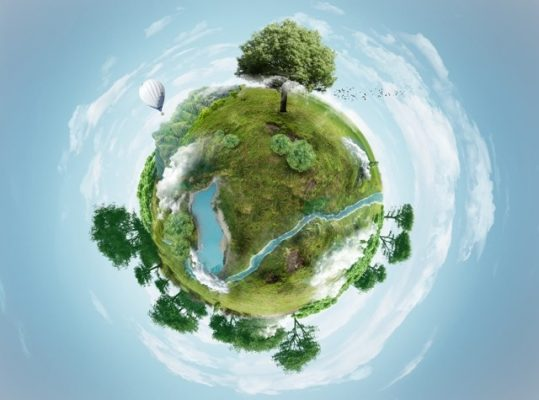
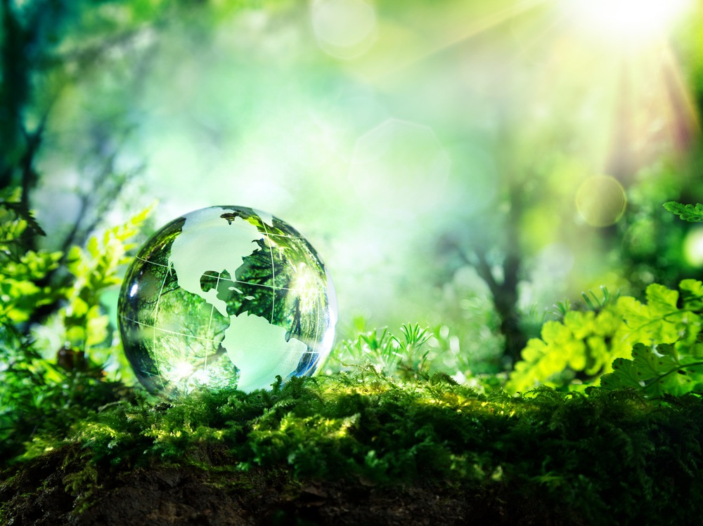
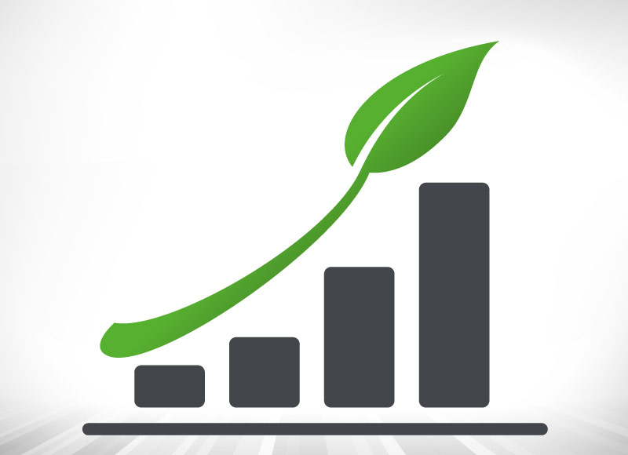

Sustentabilidade Ambiental

Conceito
O conceito de Sustentabilidade Ambiental, é justamente a maneira que nós seres humanos utilizamos de recursos naturais, sem que eles venham a esgotar, deixando assim também paras novas gerações.
s ações sustentáveis trazem resultados a médio e longo prazos. Podemos ver o quão importante é a sustentabilidade ambiental quando percebemos, que, não podemos viver sem os recursos naturais (água, solos, calor do sol, florestas..Etc), que a própria mãe natureza nos oferece. Desta maneira é importante ser sustentável e da mesma forma ensinar as crianças a ser sustentável.
Porém também é necessário praticar sustentabilidade ambiental no ambiente de trabalho e corporativo.
O principal benefício de ações de sustentabilidade ambiental:
Um dos maiores benefícios da sustentabilidade é a preservação ambiental por meio de economia de energia elétrica, reciclagem de materiais, tratamento de lixo, fim do desmatamento e incentivo ao consumo sustentável.
O que podemos fazer para garantir a sustentabilidade ambiental?
- Poupar água e evitar desperdícios.
-
- Desligar o chuveiro enquanto ensaboa o corpo ou o cabelo.
- Reutilizar a água da lavagem de roupas para lavar o quintal.
- Recolher a água da chuva e usar para regar as plantas.
- Evitar poluir, para não agredir o planeta.
-
- Reduzir ou eliminar o uso de sacos de plástico.
- Dar preferência aos produtos orgânicos, que são saudáveis e não agridem o solo com agrotóxicos.

- Não consumir alimentos ou comprar produtos derivados de espécies em extinção;
- Plantar árvores. As árvores são de grande importância para manter o ar saudável e limpo.
- Apague as luzes sempre que não tiver necessidade delas.
- Use lâmpadas fluorescentes.
- Não deixe televisão e rádio ligados se ninguém estiver a usar esses aparelhos.
- Aproveite a luz solar, abra as portas e janelas é mais agradável e faz bem para a saúde.
Curiosidades sobre construção sustentável

O Brasil está em quarto lugar entre os países com mais construções sustentáveis
A informação é do Green Council Building, maior órgão internacional de certificação do setor. São 1.230 projetos registrados e 423 empreendimentos com a certificação LEED (Leadership in Energy and Environmental Design), sistema de orientação ambiental de edificações utilizado em mais de 130 países. Esse é um motivo de muito orgulho para nós, brasileiros.

Diminuição de até 80% de resíduos poluentes
Segundo estudo realizado pelo Centro Universitário de João Pessoa, isso se deve ao aproveitamento dos recursos naturais do ambiente local e da gestão da economia de água e energia durante a construção, entre outras ações. Aqui no Brasil, desde 2008, as diretrizes de arquitetura sustentável são aplicadas nos projetos construtivos. Lembre-se: uma casa sustentável começa antes mesmo da construção, com a escolha de materiais de menor impacto ambiental e mais resistentes. Em Bali, na Indonésia, existe uma escola totalmente sustentável, feita – acredite! – totalmente com bambus. Hoje, a Green School é referência mundial
https://sitesustentavel.com.br/sustentabilidade-ambiental-o-que-e-tipos-e-exemplos/
https://www.pensamentoverde.com.br/sustentabilidade/beneficios-que-a-sustentabilidade-traz-ao-ser-humano/
https://www.pensamentoverde.com.br/atitude/10-dicas-de-sustentabilidade-ambiental/
https://cipasa.com/blog/6-curiosidades-construcao-sustentavel/